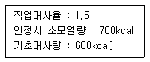
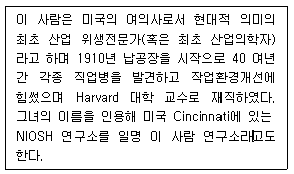
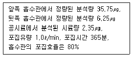
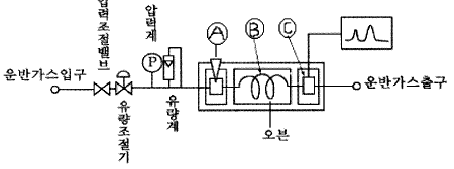

산업위생관리기사 (2004-05-23 기출문제)
1과목: 산업위생학개론
1. 육체적 작업능력(PWC)에 관한 설명으로 알맞는 것은?
- 젊은 남성에서 일반적으로 평균 16kcal/hr 정도의 작업은 피로를 느끼지 않고 하루에 40분간 계속할 수 있다.
- 젊은 남성에서 일반적으로 평균 16kcal/sec 정도의 작업은 피로를 느끼지 않고 하루에 80분간 계속할 수 있다.
- 젊은 남성에서 일반적으로 평균 16kcal/min 정도의 작업은 피로를 느끼지 않고 하루에 4분간 계속할 수 있다.
- 젊은 남성에서 일반적으로 평균 16kcal/hr 정도로 이러한 작업은 피로를 느끼지 않고 하루에 8시간 계속할 수 있다.
(정답률: 알수없음)

2. 산업피로의 종류에 관한 설명 중 알맞지 않은 것은?
- 과로 : 단기간 휴식으로 회복될 수 없는 병적상태의 피로
- 정신 및 신체피로 : 보통은 함께 나타나므로 구별이 어려움
- 국소피로와 전신피로 : 피로를 나타낸 신체의 부위가 어느정도인지에 따라 상대적으로 표현
- 보통피로: 일반적으로 하룻밤을 지내고 완전히 회복
(정답률: 알수없음)
3. 다음중 미국산업안전보건연구원(NIOSH)의 중량물 취급 작업 기준중 최대허용기준(MPL)의 설정배경과 가장 거리가 먼 것은?
- 역학조사결과
- 인간공학적 연구결과
- 정신심리학적 연구결과
- 노동생리학적 연구결과
(정답률: 알수없음)
4. 다음 조건을 적용하여 계산된 작업시 소요열량은?

- 1500kcal
- 1600kcal
- 1700kcal
- 1800kcal
(정답률: 알수없음)
5. 피로의 판정을 위한 평가(검사) 항목(종류)과 가장 거리가 먼 것은?
- 혈액
- 감각기능
- 작업성적
- 신장기능
(정답률: 알수없음)
6. 교대제에 관한 설명으로 알맞지 않은 것은?
- 2교대면 최저 3조로 3교대면 최저 4조로 편성한다.
- 야간근무의 연속은 2-3일 정도가 좋다.
- 각 반의 근무시간은 8시간씩으로 한다.
- 야근 후 다음 반으로 가는 간격은 최저 24시간을 가지도록 하여야 한다.
(정답률: 알수없음)
7. 다음중 피로의 증상과 거리가 가장 먼 것은?
- 혈압은 초기에는 높아지나 피로가 진행되면 도리어 낮아진다.
- 혈당치의 상승으로 산혈증 증상이 나타나기도 한다.
- 체온이 높아지나 피로정도가 심해지면 도리어 낮아진다.
- 뇨단백질 또는 교질물질의 배설량이 증가한다.
(정답률: 79%)
8. 직업성 피부질환에 관한 내용중 알맞지 않은 것은?
- 대부분은 화학물질에 의한 접촉피부염이다.
- 근로자의 작업병의 25%를 점유하고 있지만 생산성에 큰 저해요인이 되지 않는 것이 특징이다.
- 개인적 차원의 예방대책으로는 보호구, 피부 세척제, 보호크림의 활용이라 할 수 있다.
- 직업성 피부질환의 간접요인으로는 인종, 연령, 계절 등이 있다.
(정답률: 50%)
9. 우리나라 산업위생의 역사 중 가장 먼저 발생된 사건은?
- 공장보건위생법 제정
- 작업환경측정 정도관리제도 도입
- 근로기준법 공포
- 산업안전보건법 제정
(정답률: 알수없음)
10. 전신피로 정도를 평가하기 위한 다음의 회복기 심박수 측정 수치 중 적절한 것은?
- 작업 종료 후 90∼120초 사이의 평균 맥박수
- 작업 종료 후 120∼150초 사이의 평균 맥박수
- 작업 종료 후 150∼180초 사이의 평균 맥박수
- 작업 종료 후 180∼210초 사이의 평균 맥박수
(정답률: 알수없음)
11. 중량물 취급작업시 적용되는 감시기준(AL)과 최대허용기준(MPL)과의 관계를 알맞게 나타낸 것은?
- MPL = 9AL
- MPL = 7AL
- MPL = 5AL
- MPL = 3AL
(정답률: 알수없음)
12. 산업재해발생의 급박한 위험이 있을 때 또는 중대 재해가 발생하였을 때에는 누가 즉시 작업을 중지시켜야 하는가?
- 안전관리자
- 보건관리자
- 사업주
- 근로자 대표
(정답률: 50%)
13. 어떤 플라스틱 제조 공장에 200명의 근로자가 근무하고 있다. 1년에 40건의 재해가 발생하였다면 이 공장의 도수율은? (단, 1일 8시간 연간 290일 근무기준)
- 200
- 86.2
- 17.3
- 4.4
(정답률: 100%)
14. 다음은 직업병 발생에 대한 설명이다. 틀린 것은?
- 우리나라에서 처음으로 학계에 보고된 직업병은 진폐증이다.
- 남자가 수은, 비소, 니코틴 등의 화학물질에 여성보다 민감하다.
- 일반적으로 직업병은 젊은 연령층에서 발병률이 높다.
- 작업장의 환경은 직업병의 발생과 증세의 악화를 조장하는 원인이 될 수 있다.
(정답률: 알수없음)
15. 다음의 이 사람은 누구인가?

- Berger
- Hamilton
- Baker
- Patty
(정답률: 알수없음)
16. 생산직종사근로자에 대한 정기적인 산업안전보건교육의 교육시간기준은? (단, 사업내 안전보건교육)
- 매주 1시간 이상
- 매월 2시간 이상
- 분기당 2시간 이상
- 반기당 2시간 이상
(정답률: 알수없음)
17. 이탈리아의 의사인 Ramazzini는 1700년에 직업인의 질병(De Morbis Artificum Diatriba)를 발간하였는데, 이 사람이 제시한 직업병의 원인과 가장 거리가 먼 것은?
- 작업장에서 사용하는 유해물질
- 작업장을 관리하는 체계
- 근로자들의 불안전한 작업자세
- 근로자들의 과격한 동작
(정답률: 알수없음)
18. 인간공학에서 고려해야 할 인간의 특성과 가장 거리가 먼 것은?
- 감각과 지각
- 운동력과 근력
- 감정과 사상능력
- 기술, 집단에 대한 적응능력
(정답률: 알수없음)
19. 재해의 경제적인 직접피해와 간접피해의 비율을 적절하게 나타낸 것은? (단, Heinrich 추정법칙 기준. 직접피해 : 간접피해)
- 1 : 0.5
- 1 : 2
- 1 : 4
- 1 : 8
(정답률: 알수없음)
20. 현재 우리나라에서 발생되고 있는 업무상 질병자수 중 가장 많은 발생건수를 차지하고 있는 질환은?
- 진폐
- 요통
- 뇌· 심혈관질환
- 신체부담작업
(정답률: 알수없음)
2과목: 작업위생측정 및 평가
21. 2차 표준 보정기구와 가장 거리가 먼 것은?
- wet-test meter
- dry gas meter
- pitot-tube meter
- venturi meter
(정답률: 알수없음)
22. 다음 용어의 정의로 적절치 못한 것은?
- 액체채취방법: 시료공기를 액체 중에 통과시키거나, 액체의 표면과 접촉시켜 용해,반응,흡수,충돌 등을 일으키게 하여 당해 액체에 측정코자 하는 물질 채취
- 고체채취방법: 시료공기를 고체의 입자층을 통해 흡입, 흡착하여 당해 고체입자에 측정코자 하는 물질을 채취
- 직접채취방법: 시료공기를 용해,반응,흡착을 거치지 않고 냉각관을 통하여 직접 측정코자 하는 물질을 용기에 채취
- 여과채취방법: 시료공기를 여과재를 통하여 흡인함으로써 당해 여과재에 측정하고자 하는 물질을 채취하는 방법
(정답률: 70%)
23. 산업위생통계에서 유해물질 농도를 '표준화' 하려면 무엇을 알아야 하는가?
- 측정치와 노출기준
- 평균치와 표준편차
- 측정치와 시료수
- 기하 평균치와 기하 표준편차
(정답률: 알수없음)
24. Fick법칙이 적용된 확산포집방법에 의하여 시료가 포집될 경우에 포집량에 영향을 주는 요인이라고 볼 수 없는 것은?
- 공기중 포집대상물질 농도와 포집매질에 함유된 포집대상물질의 농도 차이
- 포집기의 표면이 공기에 노출된 시간
- 대상작업장의 공기의 습도
- 포집기에서 오염물질이 포집되는 면적
(정답률: 알수없음)
25. 빛의 파장의 단위로 사용되는 Å(Angstrom)을 국제표준 단위계(SI)로 나타낸 것은?
- 10-6m
- 10-8m
- 10-10m
- 10-12m
(정답률: 알수없음)
26. 깨끗한 셀룰로오스 섬유 여과지(cellulose fiber filter paper)의 초기무게가 1.260g 이었다. 이 여과지를 하이볼륨시료 채취기(High-volume sampler)에 장치하여 어떤 작업장에서 오전 9시부터 오후 5시까지 2L/분의 유속으로 시료 채취기를 작동시킨후 여과지의 무게를 측정한 결과, 1.280g 이었다. 이때 채취한 입자성물질의 8시간 -평균농도(㎎/m3)는?
- 20.83
- 27.65
- 31.70
- 36.72
(정답률: 알수없음)
27. 2개의 흡수관을 연결하여 메탄올을 액체채취하였다. 다음 과 같은 분석결과가 나왔다면 농도는?

- 0.113 mg/m3
- 0.119 mg/m3
- 0.135 mg/m3
- 0.143 mg/m3
(정답률: 알수없음)
28. 입자상 물질을 입자의 크기별로 측정을 하고자 할 때 사용할 수 있는 것은?
- 사이클론
- Cascade impactor
- 디지탈분진계
- 여지분진계
(정답률: 알수없음)
29. [흑구 및 습구흑구온도의 측정시간은 온도계의 직경이 ( )일 경우 5분 이상 이다.] ( )안에 알맞는 내용은?
- 7.5센티미터 또는 5센티미터
- 15센티미터
- 3센티미터이상 5센티미터미만
- 3센티미터미만
(정답률: 알수없음)
30. 다음 중 실리카겔 흡착에 대한 설명으로 옳지 않은 것은?
- 실리카겔은 규산나트륨과 황산과의 반응에서 유도된 무정형의 물질이다.
- 극성을 띠고 흡습성이 강하므로 습도가 높을수록 파과용량이 감소한다.
- 추출액이 화학분석이나 기기분석에 방해물질로 작용하는 경우가 많다.
- 이황화탄소를 탁착용매로 사용하지 않는다.
(정답률: 알수없음)
31. 석탄건류나 증류 등의 고열 공정에서 발생되는 다핵방향족 탄화수소를 채취할 때 사용되는 막여과지는?
- PVC 막여과지
- MCE 막여과지
- PTFE 막여과지
- 유리섬유 막여과지
(정답률: 알수없음)
32. 공기 중 혼합물로서 acetone 500 ppm(TLV=750ppm), sec-butyl acetate 100 ppm(TLV=200ppm) 및 methyl ethyl ketone 150ppm(TLV=200ppm)이 존재할 때 복합노출지수는?
- 1.25
- 1.56
- 1.74
- 1.92
(정답률: 알수없음)
33. 어느 작업장의 작업환경 공기에 대한 온도 측정치가 5,7,12,18,25,13의 6개이다.이들 측정치의 기하평균은?
- 11.6
- 12.2
- 13.4
- 15.5
(정답률: 알수없음)
34. 8시간 작업중 측정된 공기중 카르바릴 농도는 6.0mg/m3였다. 공기중 카르바릴의 노출기준은 5.0mg/m3이고 시료 채취 및 분석오차(SAE)는 0.23이다. 근로자의 노출농도가 노출기준을 초과하고 있는가? (단, 95% 신뢰도 기준)
- 초과한다.
- 초과하지 않는다.
- 초과할 가능성이 있다.
- 판정이 불가능하다.
(정답률: 알수없음)
35. 금속제품을 탈지 세정하는 공정에서 사용하는 유기용제인 trichloroethylene의 근로자 노출농도를 측정하고자 한다 과거의 노출농도를 조사해본 결과, 평균 40ppm이었다. 활성탄관(100㎎/50㎎)을 이용하여 0.14ℓ /분으로 채취하였다. 채취해야할 최소한의 시간(분)은? (단, trichloroethylene의 분자량 : 131.39, 25℃,1기압 가스크로마토그래피의 정량한계(LOQ): 0.4㎎)
- 10.3
- 13.3
- 16.3
- 19.3
(정답률: 알수없음)
36. 다음은 가스크로마토그래피의 기기구성도이다. 각 부위의 명칭이 올바르게 된 것은? (단, Detector:검출기, injector:시료도입부, Column:분리관, Recorder:기록계)

- 꿩 Detector-꿰 injector- 꿱 Column
- 꿩 Injector-꿰 Column- 꿱 Detector
- 꿩 Column-꿰 Detector- 꿱 Injector
- 꿩 Recorder-꿰 Injector- 꿱 Detector
(정답률: 70%)
37. 회수율을 보정하지 않고 분석결과를 산출한 중금속농도가 1mg/m3이다. 회수율 95%를 보정할 경우 중금속농도는?
- 1.95mg/m3
- 0.95mg/m3
- 0.⑤mg/m3
- 1.⑤mg/m3
(정답률: 37%)
38. 입자상 물질중 용접흄의 측정분석방법과 가장 거리가 먼 것은?
- 중량분석방법
- 원자흡광분광기를 이용한 분석방법
- 가스크로마토그래피를 이용한 분석방법
- 유도결합프라스마를 이용한 분석방법
(정답률: 알수없음)
39. 취급 또는 보관하는 동안에 외부로 부터의 공기 또는 다른 가스가 침입하지 않도록 보호하는 용기는?
- 밀폐용기
- 기밀용기
- 밀봉용기
- 차광용기
(정답률: 알수없음)
40. MCE막여과지에 관한 설명으로 틀린 것은?
- 산에 쉽게 용해된다
- 여과지 구멍의 크기는 0.45-0.8㎛가 일반적으로 사용된다.
- 시료가 여과지의 표면 또는 표면 가까운 곳에 침착되므로 석면, 유리섬유 등 현미경분석을 위한 시료 채취에도 이용된다.
- 여과지의 강도가 강하고 흡습성이 낮아 중량분석과 동시에 사용하는데 효과적이다.
(정답률: 알수없음)
3과목: 작업환경관리대책
41. 작업장의 기적이 1000m3이고 50m3/min의 실외공기가 작업장 내로 유입되고 있다. 작업장 Toluene의 농도가 40ppm에서 10ppm으로 감소하는 데 걸리는 시간은?(단, 유입되는 공기중 Toluene의 농도는 0ppm)
- 27.73분
- 29.73분
- 31.73분
- 33.73분
(정답률: 알수없음)
42. 국소환기에서 효율성 있는 운전을 하기 위해서 가장 먼저 고려해야 할 사항은?
- 필요 송풍량 감소
- 제어속도 증가
- 마찰력 증가
- 후드 개구면적 감소
(정답률: 54%)
43. 사이크론의 설계시에 블로다운시스템(Blowdown system)을 설치하면 집진효율을 증가시킬 수 있다. 일반적인 블로다 운량은?
- 처리가스량의 1~5%
- 처리가스량의 5~10%
- 처리가스량의 10~15%
- 처리가스량의 15~20%
(정답률: 60%)
44. 터보송풍기에 관한 설명으로 알맞지 않는 것은?
- 소요 풍압이 떨어져도 마력은 크게 올라가지 않는 이점이 있다.
- 풍압이 바뀌어도 풍량의 변화가 비교적 작다.
- 장소의 제약은 받지만 효율면에서는 송풍기 중 가장 좋다.
- 송풍기를 병렬해도 풍량에는 지장이 없다.
(정답률: 알수없음)
45. 국소환기시스템의 닥트설계에 있어서 덕트 합류시 균형 유지방법인 '설계에 의한 정압균형 유지법'의 장단점으로 맞지 않는 것은?
- 설계시 잘못된 유량을 고치기가 용이하다.
- 설계가 복잡하고 시간이 걸린다.
- 때에 따라 전체 필요한 최소유량보다 더 초과될 수 있다.
- 임의로 유량을 조절하기 어렵다.
(정답률: 알수없음)
46. 압력손실계산법 중에서 분지관이 작고 먼지를 대상으로 하는 경우 설계의 표준이 되는 것은?
- 저항조절평형법
- 유속조절평형법
- vane control법
- damper부착법
(정답률: 알수없음)
47. 장방형송풍관의 단경 0.13m, 장경 0.26m, 길이 15m, 속도압 20mmH2O, 관마찰계수(λ )가 0.004일 때 덕트의 압력손실은?
- 6.9mmH2O
- 7.9mmH2O
- 8.9mmH2O
- 9.9mmH2O
(정답률: 알수없음)
48. 국소배기시설의 일반적 배열순서로 가장 적절한 것은?
- 후드-덕트-송풍기-공기정화장치-배기구
- 후드-송풍기-공기정화장치-덕트-배기구
- 후드-덕트-공기정화장치-송풍기-배기구
- 후드-공기정화장치-덕트-송풍기-배기구
(정답률: 알수없음)
49. 새우등을 이용하여 곡관을 제작할 때 관의 직경이 15cm 이상인 경우, 새우등은 몇 개 이상을 사용하는 것이 가장적절한가?
- 2개
- 3개
- 4개
- 5개
(정답률: 알수없음)
50. 용접 흄이 발생하는 공정의 작업대에 부착 고정하여 개구면적이 0.6m2인 측방 외부식 플랜지 부착 장방형 후드를 설치하고자 한다 제어속도가 0.4m/s, 소요 송풍량이 37.2m3/min이라면, 발생원으로부터 어느 정도 떨어진 위치에 후드를 설치해야 하는가?
- 0.25m
- 0.5m
- 0.75m
- 1.0m
(정답률: 알수없음)
51. 귀마개와 귀덮개를 동시에 사용하여야 할 경우의 소음 정도는?
- 80㏈ 이상
- 95㏈ 이상
- 110㏈ 이상
- 120㏈ 이상
(정답률: 알수없음)
52. 다음의 송풍기중 원심력 송풍기가 아닌 것은?
- 튜브형(Tubeaxial)
- 전향형(Forward - curved)
- 후향형(Backward - curved)
- 레디알형(Radial)
(정답률: 46%)
53. 선반제조 공정에서 선반을 에나멜에 담갔다가 건조시키는 작업이 있다. 이 공정의 온도는 177℃이고 에나멜이 건조 될 때 Xylene 2ℓ /hr가 증발한다. 폭발 방지를 위한 실제 환기량은? (단, Xylene의 LEL=1%, SG=0.88, MW=106, C=10)
- 약 10 m3/min
- 약 15 m3/min
- 약 20 m3/min
- 약 25 m3/min
(정답률: 알수없음)
54. 후드의 유입계수를 구하여 보니 0.9 이었고 닥트의 기류를 측정해 보니 14m/sec이었다. 이 후드의 유입손실은? (단, 오염공기의 밀도: 1.2kgf/m3 )
- 약 1.0㎜H2O
- 약 3.0㎜H2O
- 약 6.0㎜H2O
- 약 10.0㎜H2O
(정답률: 알수없음)
55. 재순환 공기의 CO2 농도는 800ppm이고, 급기의 CO2 농도는 700ppm이었다. 급기 중의 외부공기 포함량은? (단, 외부공기의 CO2 농도는 330ppm이다.)
- 15.2%
- 17.5%
- 19.2%
- 21.3%
(정답률: 38%)
56. 1기압 20℃의 동점성계수가 1.2 × 10-5 m2/sec 이고 공기유속은 15m/sec이며 원형덕트의 단면적은 0.385m2 이라면 Reynold's number는?
- 4.81 × 105
- 5.34 × 105
- 7.62 × 105
- 8.75 × 105
(정답률: 알수없음)
57. 공기정화장치의 한 종류인 원심력 제진장치의 분리계수 (separation factor)에 대한 설명으로 적절치 않는 것은?
- 분리계수는 중력가속도와 비례한다.
- 반경이 작을수록 분리계수 값은 높아진다.
- 분리계수는 입자의 접속방향속도 제곱에 비례한다.
- 분리계수는 원심력을 중력으로 나눈 값이다.
(정답률: 14%)
58. 산업용 피부보호제에 관한 설명중 틀린 것은?
- 피부에 직접 유해물질이 닿지 않도록 하는 방법으로 고안된 것이다.
- 피막형성 보호제는 분진,유리섬유등에 대한 장해 예방등에 사용된다.
- 광과민성 물질에 대한 피부보호제는 주로 적외선, 즉 열선에 대한 장해 예방에 사용된다.
- 사용물질에 따라 지용성 물질, 광과민성 물질에 대한 피부보호제, 수용성 피부보호제, 피막형성 피부보호 제중 선택하여 사용한다.
(정답률: 알수없음)
59. 방열복이나 방열장갑의 표면에 복사열의 반사효과를 높이기 위해 근래에 가장 많이 사용하고 있는 물질은?
- 석면
- 알루미늄
- 섬유강화수지
- 열경화성수지
(정답률: 알수없음)
60. 제진장치 중 세정제진장치 종류와 가장 거리가 먼 것은?
- 축류식
- 유수식
- 가압수식
- 회전식
(정답률: 알수없음)
4과목: 물리적유해인자관리
61. 전리방사선 중 알파입자(α - 粒子)의 성질로 적절한 것은?
- 전자핵에서 방출되며 양자 1개를 가진다.
- 투과력이 가장 강하다.
- 전리작용이 약하다.
- 외부조사로 건강상의 위해가 오는 일은 드물다.
(정답률: 알수없음)
62. 전신진동이 인체에 미치는 영향이 가장 큰 진동의 주파수 범위로 가장 적절한 것은?
- 2 ~ 100 Hz
- 140 ~ 250 Hz
- 275 ~ 500 Hz
- 4000 Hz 이상
(정답률: 알수없음)
63. 레이저광의 폭로량을 평가하는데 알아야 할 사항으로 틀린 것은?
- 각막 표면에서의 조사량(J/cm2) 또는 폭로량(W/cm2)을 측정한다.
- 레이저광과 같은 직사광과 형광등 또는 백열등과 같은 확산광은 구별하여 사용해야 한다.
- 레이저광에 대한 눈의 허용량은 그 파장에 따라 수정되어야 한다.
- 조사량의 서한도는 1cm 구경에 대한 평균치이다.
(정답률: 알수없음)
64. 소음에 대한 차음효과는 벽체의 단위표면적에 대하여 벽체의 무게를 2배로 할 때마다 몇 ㏈ 씩 증가하는가? (단, 음파가 벽면에 수직입사하며 질량법칙 적용 )
- 3㏈
- 6㏈
- 9㏈
- 18㏈
(정답률: 알수없음)
65. 전리방사선의 단위인 램(Rem)을 알맞게 설명한 것은?
- 공기 1cm3에 X선을 조사해서 발생한 ion 에 의하여 1 정전단위의 전기량이 운반되는 선량이다.
- 1초간에 3.7x1010개의 원자 붕괴가 일어나는 방사선 물질의 양이다.
- 생체에 대한 영향의 정도에 기초를 둔 단위이다.
- 피조사체 1kg 당 0.01J의 에너지가 흡수되는 선량의 단위를 나타낸다.
(정답률: 알수없음)
66. 다음중 고온에 순화되는 과정(생리적변화)으로 틀린 것은?
- 체표면의 한선의 수가 감소한다
- 간기능이 저하된다
- 처음에는 에너지 대사량이 증가하고 체온이 상승 하나 후에 근육이 이완하고 열생산도 정상으로 된다
- 위액 분비가 줄고 산도가 감소되어 식욕부진, 소화불량이 유발된다.
(정답률: 알수없음)
67. [국부조명에만 의존할 경우에는 작업장의 조도가 너무 균등하지 못해서 눈의 피로를 가져올 수 있으므로 전체 조명과 병용하는 것이 보통이다. 이와 같은 경우에는 전체조명의 조도는 국부조명에 의한 조도의 ( ) 정도가 되도록 조절한다.] ( )안에 알맞는 범위는?
- 1/10∼1/5
- 1/20∼1/10
- 1/30∼1/20
- 1/50∼1/30
(정답률: 알수없음)
68. 정상적인 대기중의 산소분압(mmHg)은? (단, 해면 기준)
- 약 100
- 약 120
- 약 140
- 약 160
(정답률: 알수없음)
69. 음향출력 10-2W의 음원이 있다. 이 음원의 음력수준(power level)은?
- 80dB
- 90dB
- 100dB
- 110dB
(정답률: 알수없음)
70. 고온폭로에 의한 장애중 열사병에 관한 설명으로 알맞지 않은 것은?
- 중추성 체온조절 기능장애이다.
- 혈액농축과 혈중 염소농도가 현저히 떨어진다
- 고온다습한 환경에서 격심한 육체노동을 할 때 발병한다.
- 피부에 땀이 나지 않아 건조할 때가 많다.
(정답률: 알수없음)
71. 이상기압에 대한 작업방법으로 다음 중 적합하지 않는 것은?
- 고기압에서 작업을 행할 때는 규정시간을 넘지 않도록 한다.
- 고기압 작업의 감압은 압력의 2분의 1까지는 매분1㎏/cm2 비율로 감압한다.
- 감압이 끝날 무렵에 순수한 산소를 흡입시키면 감압시간을 단축시킬 수 있다.
- 고압 환경에서 작업할 때에는 질소를 헬륨으로 대치한 공기를 호흡시킨다.
(정답률: 54%)
72. 음의 세기가 10배로 되면 음의 세기수준은?
- 2dB 증가
- 3dB 증가
- 6dB 증가
- 10dB 증가
(정답률: 알수없음)
73. 마이크로파에 의한 생물학적 작용으로 적합치 않은 것은?
- 인체에 흡수된 마이크로파는 기본적으로 열로 전환 된다.
- 마이크로파에 의한 표적기관은 눈이다.
- 마이크로파는 중추신경계통에 작용하며 혈압은 폭로 초기에 상승하나 곧 억제효과를 내어 저혈압을 초래 한다.
- 5∼25cm 의 파장의 것은 세포조직과 신체기관 까지 투과한다.
(정답률: 알수없음)
74. 조명에 대한 설명으로 틀린 것은?
- 조명이 불충분한 작업환경에서는 눈이 쉽게 피로해지며 작업능률이 저하된다.
- 조명부족하에서 작은 대상물을 장시간 직시하면 근시를 유발할 수 있다.
- 백내장 망막변성은 기질적 안질환으로 조명부족으로 오는 안질환이다.
- 조명과잉은 망막을 자극해서 잔상을 동반한 시력장해 또는 시력협착을 일으킨다.
(정답률: 알수없음)
75. 추울 때 체온조절의 생리적 기전이라 볼 수 없는 것은?
- 피부혈관의 수축
- 근육긴장의 증가와 떨림
- 갑상선자극 호로몬 분비감소
- 수의적인 운동증가
(정답률: 알수없음)
76. 재질이 일정하지 않으며 균일하지 않으므로 정확한 설계가 곤란하고 처짐을 크게 할 수 없으며 고유진동수가 10Hz 전후밖에 되지 않아 진동방지라기 보다는 고체음의 전파방지에 유익한 방진재료는?
- 방진고무
- felt
- 공기용수철
- 코르크
(정답률: 알수없음)
77. 중심주파수가 1000Hz 일 때 밴드의 주파수 범위는? (단, 1/1옥타브밴드, 낮은쪽 주파수 ∼ 높은쪽 주파수)
- 624Hz ~ 1421Hz
- 707Hz ~ 1414Hz
- 824Hz ~ 1192Hz
- 814Hz ~ 1214Hz
(정답률: 알수없음)
78. 고압환경(2차적인 가압현상:화학적 장해)에 관한 설명 중 옳지 않는 것은?
- 공기중의 질소가스는 4기압 이상이면 마취작용을 일으킨다.
- 산소 분압이 2기압을 넘으면 산소중독증상을 보인다.
- 이산화탄소 농도가 고압환경에서 대기압으로 환산하여 0.2%를 초과해서는 안된다 .
- 고압환경에서 일산화탄소는 산소의 독성과 질소의 마취작용을 완화시키는 경향이 있다.
(정답률: 알수없음)
79. 공장내에 각기 다른 세대의 기계에서 각각 90㏈(A),95㏈ (A),88㏈(A)의 소음이 발생된다면 동시에 가동시켰을 때 합성 소음도와 가장 가까운 것은?
- 96㏈(A)
- 97㏈(A)
- 98㏈(A)
- 99㏈(A)
(정답률: 알수없음)
80. 고열 작업자에게 보통 몇 %의 생리적 식염수를 공급하는 것이 가장 알맞는가?
- 0.1
- 0.5
- 1.0
- 5.0
(정답률: 알수없음)
5과목: 산업독성학
81. 직업성 질병을 일으키기 쉬운 작업과 연결한 것이다. 잘못 연결된 것은?
- 황화수소중독 - 오수조내의 작업
- 비중격천공 - 크롬도금작업
- 안구진탕증 - 적외선을 발생하는 작업
- 근막통증후군 - VDT작업
(정답률: 알수없음)
82. 진폐증을 잘 일으키는 석면분진의 크기는?
- 길이가 5-8 ㎛보다 길고, 두께가 0.25-1.5 ㎛보다 얇은 것
- 길이가 5-8 ㎛보다 짧고, 두께가 0.25-1.5 ㎛보다 얇은 것
- 길이가 5-8 ㎛보다 길고, 두께가 0.25-1.5 ㎛보다 두꺼운 것
- 길이가 5-8 ㎛보다 짧고, 두께가 0.25-1.5 ㎛보다 두꺼운 것
(정답률: 37%)
83. 독성물질간 상호작용의 설명으로 적절치 않은 것은?
- 상가작용(3+3=6)
- 상승작용(3+3=5)
- 길항작용(3+3=0)
- 가승작용(3+0=10)
(정답률: 알수없음)
84. 피부접촉에 의해 심한 피부염을 일으키는 물질은?
- 황린
- 흑린
- 청린
- 적린
(정답률: 알수없음)
85. 염료, 합성고무경화제의 제조에 사용되며 급성중독으로는 피부염, 급성방광염을 유발하며, 만성중독으로는 방광, 뇨로계 종양을 유발하는 유해물질은?
- 벤지딘
- 이황화탄소
- 이염화메틸렌
- 노말핵산
(정답률: 알수없음)
86. 독성물질의 생체과정인 흡수, 분포, 생전환, 배설 등에 변화를 일으켜 독성이 낮아지는 길항작용의 종류로 적절한 것은?
- 화학적 길항작용
- 기능적 길항작용
- 배분적 길항작용
- 수용적 길항작용
(정답률: 알수없음)
87. 크롬에 의한 급성중독의 특징으로 가장 알맞는 것은?
- 혈액장해
- 신장장해
- 피부습진
- 중추신경장해
(정답률: 알수없음)
88. 유해물질을 생리적작용에 의하여 분류한 자극제에 관한 설명으로 틀린 것은?
- 호흡기관의 종말기관지와 폐포점막에 작용하는 자극 제는 물에 잘 녹는 물질로 심각한 영향을 준다.
- 상기도의 점막에 작용하는 자극제는 크롬산, 산화에틸렌등이 해당된다.
- 상기도 점막과 호흡기관지에 작용하는 자극제는 불소, 요오드 등이 해당된다
- 피부와 점막에 작용하여 부식작용을 하거나 수포를 형성하는 물질을 자극제라고 하며 고농도가 눈에 들어가면 결막염과 각막염을 일으킨다.
(정답률: 알수없음)
89. 화학물질의 투여에 의한 독성범위를 나타내는 '안전역' 을 알맞게 나타낸 것은? (단, LD:치사량, TD:중독량, ED:유효량 )
- 안전역= ED50/TD50
- 안전역= TD50/ED50
- 안전역= ED50/LD50
- 안전역= LD50/ED50
(정답률: 알수없음)
90. 유기인제 살충제의 급성독성 원인으로 적절한 것은?
- 파라치온의 가수분해 억제
- 조혈기능의 장애
- 혈액 응고작용 억제
- 아세틸콜린에스테라제의 활동 억제
(정답률: 알수없음)
91. 납이 인체내로 흡수됨으로써 초래되는 현상이 아닌 것은?
- 혈청내 철 감소
- 요중 corproporphrin 증가
- 망상적혈구수의 증가
- 혈색소량 저하
(정답률: 알수없음)
92. 벤젠(C6H6)에 관한 설명으로 알맞지 않는 것은?
- 주요 최종 대사산물은 페놀이며 이것은 황산 혹은 글루크론산과 결합하여 소변으로 배출된다.
- 급성중독은 주로 골수손상으로 인한 급성 빈혈이며 심하면 사망이 이르기도 한다.
- 고농도의 벤젠증기는 마취작용이 있으며 약하기는 하지만 눈 및 호흡기 점막을 자극한다.
- 벤젠 폭로의 후유증은 백혈병이 발생한다는 것이 알려져 있다
(정답률: 알수없음)
93. 다음의 유기용제 중 할로겐화 탄화수소에 관한 설명으로 틀린 것은?
- 일반적으로 할로겐화 탄화수소의 독성의 정도는 할로겐원소의 수가 커질수록 증가한다.
- 일반적으로 할로겐화 탄화수소의 독성의 정도는 화합물의 분자량이 커질수록 증가한다.
- 대개 중추신경계의 억제에 의한 마취작용이 나타난다.
- 가연성과 폭발의 위험성이 높아 취급시 주위하여야 한다.
(정답률: 알수없음)
94. 수은 중독환자의 치료에 적합하지 않는 방법은?
- Ca-EDTA 투여
- BAL(British Anti-Lewisite) 투여
- N-acetyl-D-penicillamine 투여
- 우유와 계란의 흰자를 먹인 후 위 세척
(정답률: 40%)
95. 방향족 탄화수소중 저농도에 장기간 폭로되어 만성중독을 일으키는 경우 가장 위험한 것은?
- 톨루엔
- 크실렌
- 벤젠
- 에틸렌
(정답률: 55%)
96. 직업성 피부염을 평가할때 실시하는 임상시험은?
- 생체시험(in vivo test)
- 실험생체시험(in vitro test)
- 첩포시험(patch test)
- 에임즈시험(ames assey)
(정답률: 알수없음)
97. 직업성 만성중독으로 무력증, 식욕감퇴 등의 초기증세를 보이다 심해지면 중추신경계의 특정부위를 손상시켜 파킨슨증후군과 보행장해가 두드러지는 중금속은?
- 아연
- 망간
- 납
- 니켈
(정답률: 알수없음)
98. 폭로물질에 대하여 간장이 표적장기가 되는 이유와 가장 거리가 먼 것은?
- 간장은 체액의 전해질 및 pH를 조절하여 신체의 항상성 유지 등의 신체조정역활을 수행하기 때문에 폭로에 민감하다
- 간장은 혈액의 흐름이 매우 풍성하기 때문에 혈액을 통하여 쉽게 침투가 가능하다
- 간장은 매우 복합적인 기능을 수행하기 때문에 기능의 손상가능성이 매우 높다
- 간장은 문정맥을 통하여 소화기계로부터 혈액을 공급받기 때문에 소화기관을 통하여 흡수된 독성물질의 일차표적이 된다
(정답률: 알수없음)
99. 독성실험단계 중 제2단계(동물에 대한 만성폭로시험)에 관한 내용과 가장 거리가 먼 것은?
- 치사성과 중독성장해에 대한 반응곡선을 작성한다.
- 장기(臟器) 독성 실험을 한다.
- 변이원성에 대하여 2차적인 스크리닝 실험을 한다.
- 행동특성을 실험한다.
(정답률: 알수없음)
100. 유해물질의 농도를 C,폭로시간을 t라 하였을 경우 작업장에서 발생되는 유해물질 지수 k는?
- k = c×√t
- ｋ ＝c/t
- ｋ ＝t/c
- ｋ ＝ｃ x ｔ
(정답률: 알수없음)